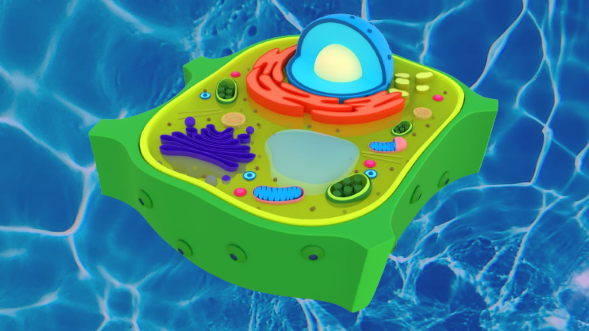

Célula Vegetal
ㅤA célula vegetal é um componente básico de todos os seres vivos que fazem parte do reino plantae. Assim como a célula animal a
célula vegetal é eucarionte, ou seja, possui núcleo definido e vários tipos de organelas, esses dois topos celulares possuem
membrana plasmática, citoplasma e núcleo, com tudo, “parede celular, cloroplastos, e vacúolos de suco celular “, são estruturas
que pertencem apenas à célula vegetal, pois são específicas para o estilo de vida das planta.
ㅤA célula vegetal quando nos referimos
ao aspecto funcional e estrutural pode ser considerada parecida com a animal, isso significa que as organelas presentes no interior
da célula vegetal sejam bem parecidas com as organelas presentes na célula animal. Apesar do mecanismo que são responsáveis pela produção
de proteínas, DNA e outros, sejam os mesmos. Há diferenças entre as duas células.
ㅤA pesar das suas células serem eucariontes, há algumas
diferenças entre elas. A célula vegetal na parte externa de sua estrutura possui uma parede celular que é responsável pela estrutura da
célula e evita que ela se rompa, diferente da célula animal que não possui essa parede. Já na parte interna da membrana plasmática é
importante apontar algumas diferenças entre as organelas presente nas duas células, como por exemplo o vacúolo de suco celular,
plastídios presentes na célula vegetal e na animal não. Outras diferenças entre as duas células é que a célula animal é heterotrófica,
ou seja, ela não produz seu próprio alimento precisando se alimentar de outros seres vegetais ou animais, já a célula vegetal é
autotrófica, ou seja, ela produz seu próprio alimento através da fotossíntese que utiliza luz solar como fonte de energia.
Curiosidades
ㅤA célula vegetal possui parede celular, plastídios que podem ser separados em três grupos os “leucoplastas, cromoplastos e os cloroplastos”, Glioxissoma e o vacúolo de suco celular. Assim como todas as células eucariontes ela possui o núcleo definido e as organelas celulares. A parede celular da célula vegetal é formada por uma estrutura mais rígida do que a do glicocálice da célula animal, então ele vai oferecer uma resistência maior. Ela é permeável, mas não é seletiva então ela vai deixar passar algumas coisas, mas ela não vai selecionar o que entra ou o que sai da estrutura. Ela também composta por celulose e tudo que a parede celular for delimitar é chamado de delimitação de lúmen celular. Dentro do lúmen é encontrado o protoplasma que é a parte viva da célula que engloba membrana plasmática, citoplasma e núcleo.